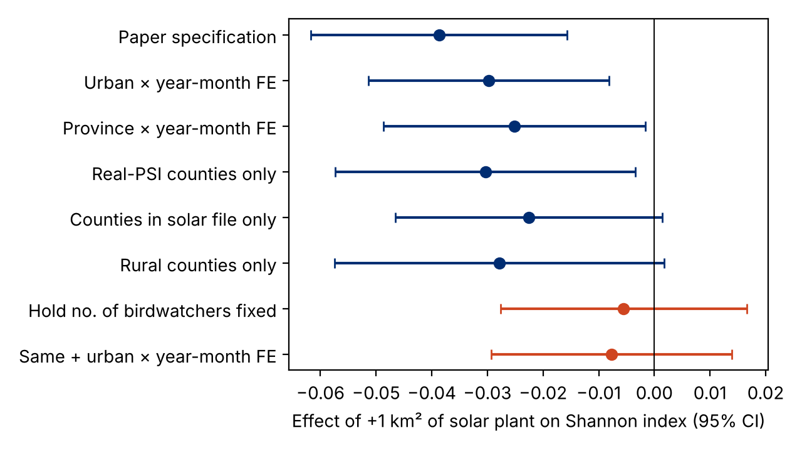

Does China's solar expansion policy reduce bird diversity?
A replication and evaluation of Zhang et al. (2026), Science 393, 831 (doi:10.1126/science.aee0747). Work by Sahil, research assistant to Prof. Paul J. Ferraro, Johns Hopkins University. Every number on this page comes from Stata, run on the authors' data.
Context: on 1 October 2026 Science posted an Editor's Note saying eLetters had raised technical concerns about the paper and that these were being evaluated (doi:10.1126/science.aem4102).
Project record
Everything done, in order. Each step links to its own report and code.
| Step | Question | What was done | Result | Report |
|---|---|---|---|---|
| Task 1 Replication | Do the results reproduce? What is the data structure and estimand? | Ran the authors' code; rebuilt the sample; TWFE diagnostics; IV exclusion tests | 12 of 12 numbers match. Main estimate falls to −0.0027 in fair comparisons | |
| Task 2 Sensitivity | How much hidden confounding would overturn it? | Cinelli–Hazlett analysis with sensemakr | 2.2% is enough | |
| Task 3 Staggered DiD | Does TWFE mislead under staggered timing? | Callaway–Sant'Anna, BJS, Sun–Abraham | +0.02 to +0.08, not significant | |
| 13 Nov Follow-ups | Effort, missing months, solar area, weak instrument | Effort outcomes; full county × month grid; Area as treatment; Anderson–Rubin sets | PSI linked to less observation; Area effect vanishes holding effort fixed; IV fails on exclusion | |
| 19 Nov Follow-ups | Residualized sensitivity; dCDH estimators; birdwatcher variable; Area data | FWL residualization; did_multiplegt_dyn and _stat; data checks | dCDH −0.03 to −0.05, weaker with controls; effort pre-trends fail | PDF · dCDH |
| 20–21 Nov Synthesis | One consolidated account; let a reader test alternatives | Final report; 792-regression grid for this page | See below |
Paper claims, checked
Each claim links to the exact page of the paper or its Supplementary Materials (SM). Links open the publisher's PDF at that page.
| The paper says | Where | What we find |
|---|---|---|
| One more PSI point lowers Shannon by 0.0125 (N = 46,371) | Table 1, p. 832 | Reproduces exactly. Falls to −0.0027 (p ≈ 0.5) in fair comparisons. → |
| Bird data come from a citizen-science platform (China Birdreport) | p. 832; SM p. 2 | Records are opportunistic. Their volume is related to PSI. → |
| Observer effort is handled by the control Duration (birding time per birdwatcher) | p. 832; Table S1, SM p. 24 | “Number of birdwatchers” is a count of records, not people. Effort is never an outcome. → |
| Results hold after dropping the bottom 20/10/5/3% of county-months by record count | SM p. 15; Table S14, SM p. 44 | The table keeps 7,954 to 26,918 rows: 17–58% of the sample, not 80–97%. |
| PSI correlates positively with solar-plant area (r = 0.041) | p. 833; SM p. 12; Fig. S2, SM p. 21 | That is across counties. Within a county over time the relation is negative. → |
| Instrument: ln(sunshine, 1984–2013) ÷ city climate-policy uncertainty | p. 833; SM p. 8 | The data label says 1994–2023. The instrument also has a direct effect. → |
| IV estimate −0.1264 | SM p. 9; Table S7, SM p. 33 | Reproduces. Becomes −0.042, not significant, once the direct effect is allowed. → |
| Instrument validity tests | Table S10, SM p. 38 | The reported F of about 8 is the joint F of all regressors. The instrument's own F there is 49. |
| Propensity-score matching confirms the result | SM p. 11; Table S11, SM p. 40 | The matching weights are not applied. With them: about −0.005, not significant. |
| Solar-plant area also lowers Shannon | SM p. 13; Table S12, SM p. 41 | −0.0387 reproduces. It vanishes holding birdwatcher records fixed. → |
| Data sources, including plant capacity | Table S2, SM p. 26 | Area is missing for 1,184 counties and set to 0; only 473 of them also lack PSI. |
Page numbers were checked against the published PDFs: journal pages for the article, PDF pages for the SM. The article may need a journal subscription.
Change the model
Why this is here. The paper's conclusion rests on one specification. This tool shows what happens under any other reasonable one. Every result is a real Stata regression, run in advance (792 in total).
Add a hidden confounder
Why this is here. No study controls for everything. This tool asks how strong an unmeasured confounder must be to change the conclusion (Cinelli & Hazlett 2020). The formulas are exact and reproduce Stata's sensemakr output.
The orange dot is your confounder. Diamonds mark confounders 1 to 5 times as strong as Duration. Duration explains 4% of leftover Shannon variation but only 0.06% of leftover PSI variation. Standard errors here are the unclustered ones the method uses.
Relax the instrument's key assumption
Why this is here. The IV estimate is valid only if the instrument affects birds through PSI alone. In counties where PSI is fixed at 0, the instrument still moves Shannon. This tool shows the IV estimate for any assumed direct effect (Conley, Hansen & Rossi 2012). Each point is a 2SLS regression re-run in Stata.
Intervals here are the usual 2SLS ones. Weak-instrument-robust (Anderson–Rubin) sets are in section 4. The direct effect is estimated in mostly urban counties, so treat this as a sensitivity check, not a corrected estimate.
1. The main estimate
It reproduces exactly. It does not survive a fair comparison. Paper: Table 1, p. 832.
| Specification | PSI effect | SE | p |
|---|---|---|---|
| Paper: county + year-month fixed effects | −0.0125 | 0.0037 | <0.001 |
| Urban × year-month fixed effects | −0.0027 | 0.0037 | 0.47 |
| Only counties with real PSI data | −0.0027 | 0.0038 | 0.49 |
| Province × year-month fixed effects | −0.0146 | 0.0047 | 0.002 |
| Matching, with the matching weights applied | about −0.005 | n.s. |
- PSI is missing for 724 of 2,501 counties and set to 0. They are 694 of 847 urban districts but only 9 of 1,497 rural counties.
- So 83.1% of urban county-months have filled-in PSI, against 1.2% of rural ones. The regression mostly compares rural counties with urban districts.
- Birdwatching grew much faster in cities. Separate urban and rural monthly shocks, or dropping the filled-in zeros, remove about 80% of the effect.
2. Is the outcome measuring birds or birdwatching?
Shannon rises with effort. If high-PSI places are observed less, they look less diverse with the same birds. Paper's treatment of effort: SM p. 15.
| Effect of +1 PSI point on | Paper design | Urban × month FE | Real-PSI only |
|---|---|---|---|
| ln(birdwatcher records) | −0.041*** | −0.014** | −0.008 |
| ln(1 + total birding hours) | −0.057*** | −0.020*** | −0.011 |
| Chance a county-month is observed at all | −0.0055*** | +0.0001 | +0.0002 |

- In the paper's design PSI predicts less effort and fewer observed months. In fair comparisons both links vanish.
- Holding ln(records) fixed, the PSI effect on Shannon is +0.003 (p = 0.31).
- That is a diagnostic, not a fix: if birds leave, birdwatchers may follow. But the paper never examines effort as an outcome.
3. Solar-plant area as the treatment
PSI measures documents; birds respond to land. Paper: Table S12, SM p. 41.
| Specification (outcome: Shannon unless stated) | Effect of +1 km² | p |
|---|---|---|
| Paper (Table S12, column 1) | −0.0387 | 0.001 |
| Urban × year-month FE | −0.0298 | 0.007 |
| Province × year-month FE | −0.0251 | 0.036 |
| Holding ln(birdwatcher records) fixed | −0.0055 | 0.62 |
| Outcome: ln(birdwatcher records) | −0.0843 | <0.001 |
| dCDH, all counties | −0.106 (SE 0.068) | n.s. |

- For the paper: Area stays negative in the comparison-group checks where PSI does not.
- Against: more area goes with 8.4% fewer records per km². Holding records fixed removes 85% of the effect. dCDH finds nothing significant.
- Data: source is licensed plants from the National Energy Administration (Table S2, SM p. 26). The file has 11,699 true zeros, so missing counties can be told apart from counties with no plants.
4. The instrumental variable
Paper: design, SM p. 8; estimates, Table S7, SM p. 33. The IV estimate (−0.126) is ten times the main estimate.
| Clustering | Instrument F | Benchmark 23.1 | 95% Anderson–Rubin set |
|---|---|---|---|
| County (paper) | 30.2 | passes | [−0.217, −0.069] |
| City | 10.8 | fails | [−0.295, −0.038] |
| Province | 2.8 | fails | (−∞, −0.030] ∪ [0.590, ∞) |

- Weakness is not the problem. Anderson–Rubin sets stay valid with weak instruments and still exclude zero.
- Exclusion is. Where PSI is fixed at 0, the instrument still lowers Shannon: −0.00214 (p = 0.048). Allowing for it gives −0.042, with an Anderson–Rubin set of [−0.105, +0.014]. Try other values.
5. Staggered difference-in-differences (binary adoption)
When treatment starts at different times, TWFE uses already-treated counties as controls. These estimators avoid that.
| Estimator | Main sample (real PSI) | Paper-style (missing PSI = never treated) |
|---|---|---|
| TWFE, same binary treatment | +0.032 | |
| Callaway & Sant'Anna (2021) | +0.057 (n.s.) | −0.091 |
| Borusyak, Jaravel & Spiess (2024) | +0.078 (n.s.) | −0.087 (pre-period −0.173) |
| Sun & Abraham (2021) | +0.024 (n.s.) |


- None finds harm in the main sample. Negative estimates appear only when filled-in urban counties act as controls, and then pre-trends fail.
- Limits: PSI becomes 0/1; the 838 counties already treated in 2014 are dropped.
6. de Chaisemartin & D'Haultfœuille: PSI as a dose
dCDH compares each county whose PSI changes with counties at the same starting PSI that have not changed yet. These runs take minutes each, so they are shown as fixed results.
| Specification | Effect per PSI point (SE) | Pre-trend test |
|---|---|---|
| did_multiplegt_dyn (event study) | ||
| All counties | −0.055 (0.018)*** | passes (p = 0.74) |
| Within urban / within rural | −0.041 (0.019)** | passes |
| Real-PSI counties | −0.037 (0.019)** | passes |
| Real-PSI, adjusted for the 9 controls | −0.025 (0.019) | passes |
| Within urban/rural, adjusted for controls | −0.029 (0.018) | passes |
| did_multiplegt_stat (weighted average slope) | ||
| All counties | −0.035 (0.016)** | passes |
| All counties, with the 9 controls | −0.024 (0.015) | passes |
| Outcome: ln(birdwatcher records) | ||
| dyn, all counties | −0.019 (0.010) | fails (p = 0.001) |

- For the paper: a negative effect with Shannon pre-trends passing. The most supportive result we have.
- Against: not significant with the paper's controls in the fair samples, and the effort pre-trend test fails.
- Why it differs from section 5: it measures the effect of more policy, using later increases in counties already treated in 2014. The binary estimators measure the effect of a first policy.
- Not run: the “no stayers” method (
did_had) needs all units untreated at first and one adoption date. Neither holds here.
Questions answered
What does “83% of urban county-months have imputed PSI” mean?
Of all urban county-months in the regression, 83.1% belong to counties whose PSI was missing and filled in as 0. For rural the share is 1.2%. The real-PSI sample drops 20,364 rows, 98.7% of them urban.
Where does the paper analyze the number of birdwatchers?
Only inside the control Duration (Table S1, SM p. 24). In the authors' file the variable is a count of submitted records per county-month, so it measures checklists, not people.
Why did the first sensitivity run fail, and how was it fixed?
Explicit county dummies need 2,344 variables; Stata/BE allows 2,048. Residualizing every variable on the fixed effects first gives exactly the same coefficient (−0.0125283) and lets sensemakr run.
Is the instrument weak?
F is 30.2 with county clusters, 10.8 with city clusters, 2.8 with province clusters. But Anderson–Rubin sets, valid with weak instruments, still exclude zero. The problem is exclusion, not strength.
Is the plausibly-exogenous IV step valid?
As a sensitivity check, yes. As a corrected estimate, no: the direct effect is measured in mostly urban counties. It shows the IV conclusion depends on an assumption the data contradict.
Is Area missing for the same counties as PSI?
No. Area is missing for 1,184 counties; only 473 of them also lack PSI. So missing data do not explain choosing PSI over Area.
Why do dCDH and the binary estimators disagree?
They answer different questions: the effect of more policy versus the effect of a first policy. Most PSI variation is later increases in counties already treated in 2014, which only dCDH uses.
What could not be run?
did_multiplegt_dyn with controls() and with continuous(), and explicit-dummy sensitivity, all because of Stata/BE limits. Workarounds are described above; all three can run in Stata/MP or R.
Are the live tools real estimates or approximations?
Real. Tools A and C read results from Stata regressions run in advance (7_1_spec_grid.do). Tool B uses the published closed-form formulas with inputs from Stata, and reproduces sensemakr to four decimals.
Conclusion and limitations
- The reported effect depends on comparing rural counties with urban districts whose policy data are missing, on an outcome whose volume is related to the treatment, and on an instrument with a measurable direct effect.
- The most favourable modern estimator (dCDH) finds a negative effect, but it weakens with controls and its effort pre-trend test fails.
- The evidence is insufficient to conclude that the policy reduced bird diversity. It is also not evidence of no effect.
Limitations of this evaluation
- We rely on the authors' data files; how some were built could not be verified.
- “Holding birdwatchers fixed” is a diagnostic, not a solution.
- Stata/BE limits prevented three specifications.
What would settle it
- A test where effort is fixed by design, such as China BON-Birds fixed transects.
- dCDH with controls and the continuous option, with bounds for the effort pre-trends.
- Inverse-probability weighting for observed months.
Code, data and reports
Final reportdCDH reportStata code792-regression grid (CSV)
do "YOUR_PATH/Solar_Birds_Replication/run_everything.do"
| Folder | What it does |
|---|---|
01_Task1_Replication | Sample build, reproduction check, TWFE diagnostics, IV exclusion tests |
02_Task2_Sensitivity | Cinelli–Hazlett sensitivity analysis |
03_Task3_Staggered_DiD | Callaway–Sant'Anna, BJS, Sun–Abraham |
05_Followups_Nov13 | Effort, sample flow, missingness grid, solar area, weak-IV and Anderson–Rubin |
06_Followups_Nov19 | Residualized sensitivity, dCDH, data facts, extra checks |
07_Interactive | The regression grid, sensitivity inputs and IV grid behind the live tools |
References
- Borusyak, Jaravel & Spiess (2024). Revisiting event-study designs. Review of Economic Studies.
- Callaway & Sant'Anna (2021). Difference-in-differences with multiple time periods. Journal of Econometrics.
- Cinelli & Hazlett (2020). Making sense of sensitivity. JRSS-B 82(1).
- Conley, Hansen & Rossi (2012). Plausibly exogenous. Review of Economics and Statistics.
- de Chaisemartin & D'Haultfœuille. Difference-in-differences estimators of intertemporal treatment effects. Review of Economics and Statistics 108(4).
- de Chaisemartin, D'Haultfœuille & Vazquez-Bare (2024). DiD estimators with continuous treatments and no stayers. AEA Papers and Proceedings.
- Montiel Olea & Pflueger (2013). A robust test for weak instruments. JBES.
- Sun & Abraham (2021). Estimating dynamic treatment effects in event studies. Journal of Econometrics.
- van Kippersluis & Rietveld (2018). Beyond plausibly exogenous. Econometrics Journal.
- Wing et al. (2024). Designing difference-in-difference studies with staggered treatment adoption. Annual Review of Public Health.
- Zhang et al. (2026). China's solar expansion policy reduces bird diversity. Science 393, 831.
The authors' data and original code are not redistributed here; they come from the paper's replication package.
Glossary
A diversity score: higher when more species are recorded and records are spread evenly.
Policy Stringency Index: how many, and how binding, solar-promotion documents a county has in a year.
A regression that compares each county with itself over time, net of shocks common to all counties in a month.
PSI that was missing and filled in as 0 by the authors.
Something that affects both the policy and the outcome, creating a non-causal link.
A variable that shifts the treatment and should affect the outcome only through it (the exclusion restriction).
A confidence interval for an IV estimate that stays valid when the instrument is weak.
Checks whether treated and comparison units were already diverging before treatment.
Allowing errors to be correlated within a group (county, city, province) when computing standard errors.
n.s. = not significant at 5%. ** p < 0.05, *** p < 0.01.
Independent replication and evaluation; not affiliated with the paper's authors or the journal.